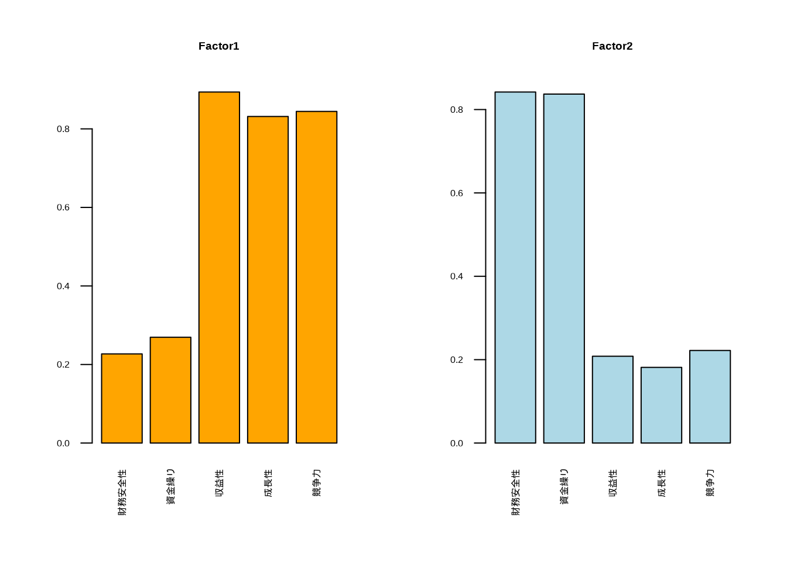
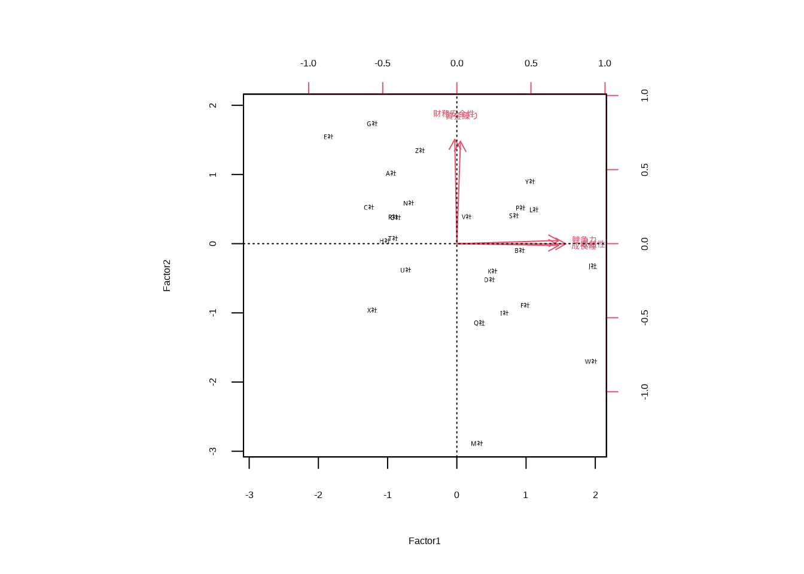
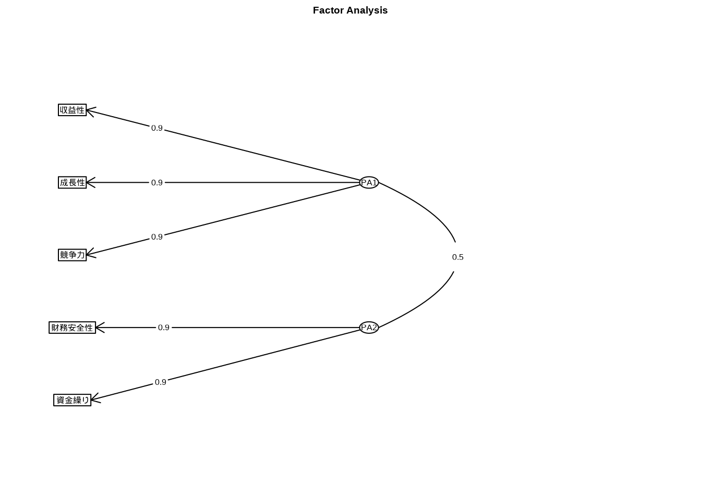
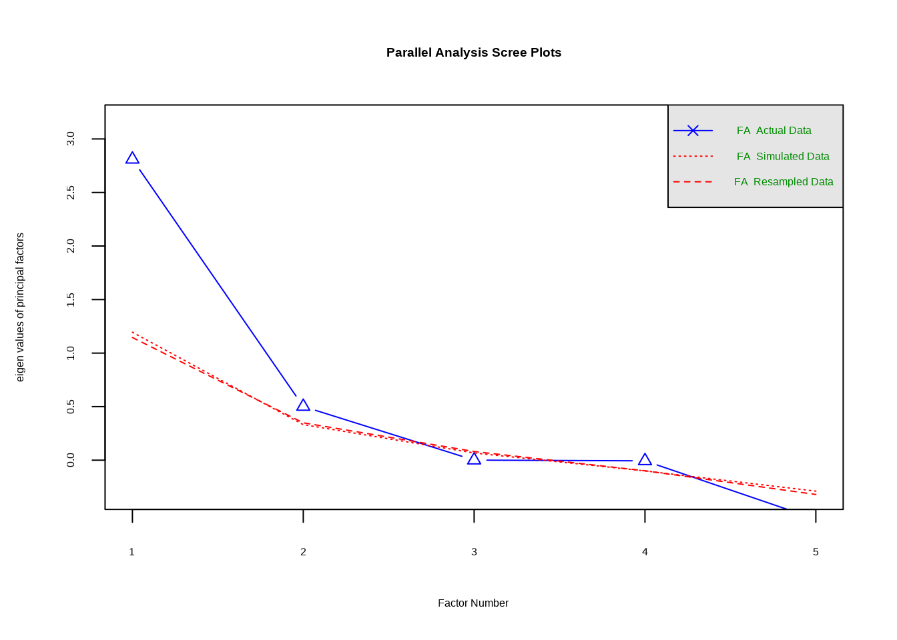
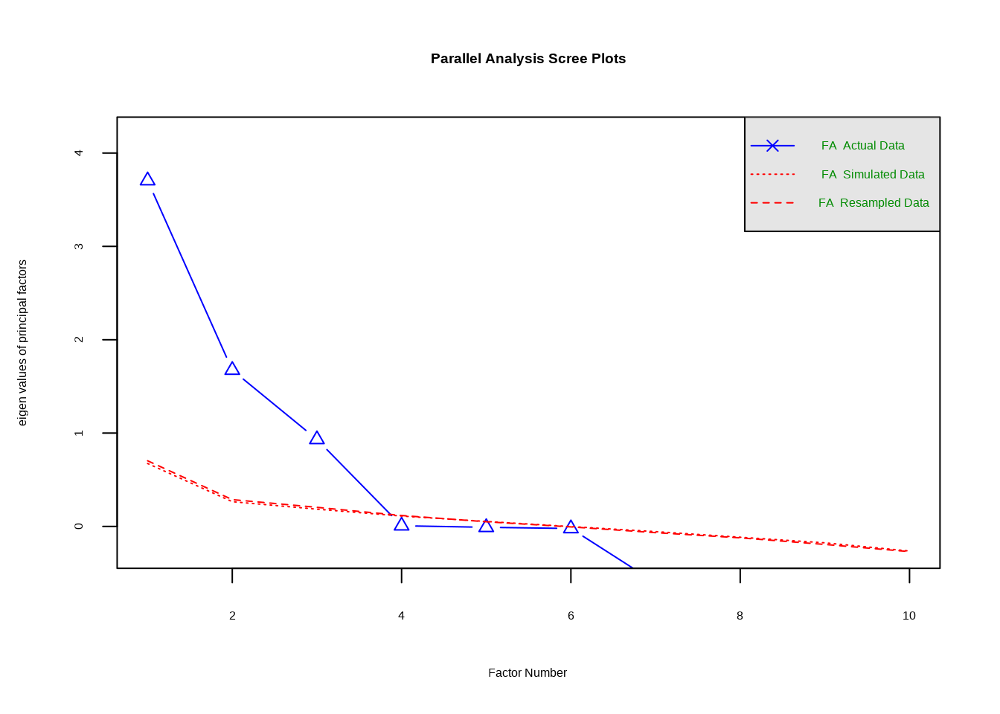
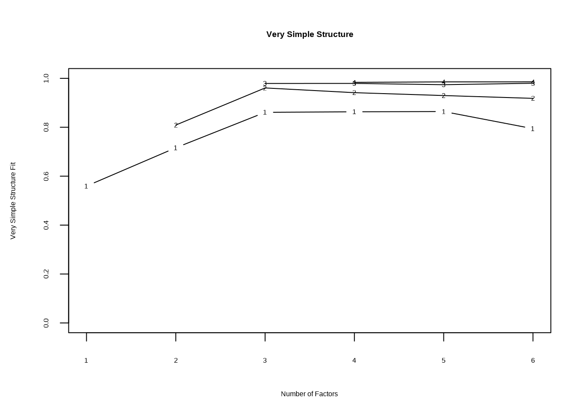
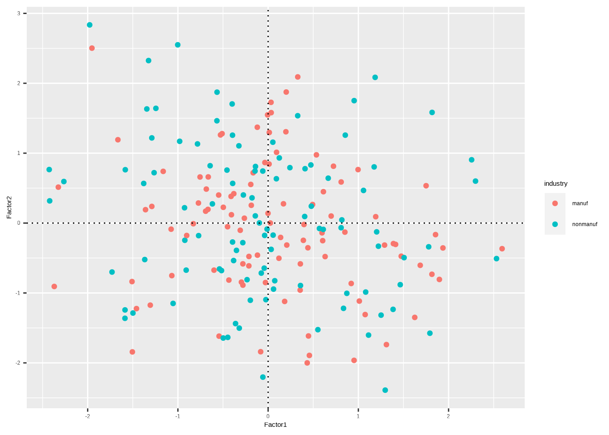
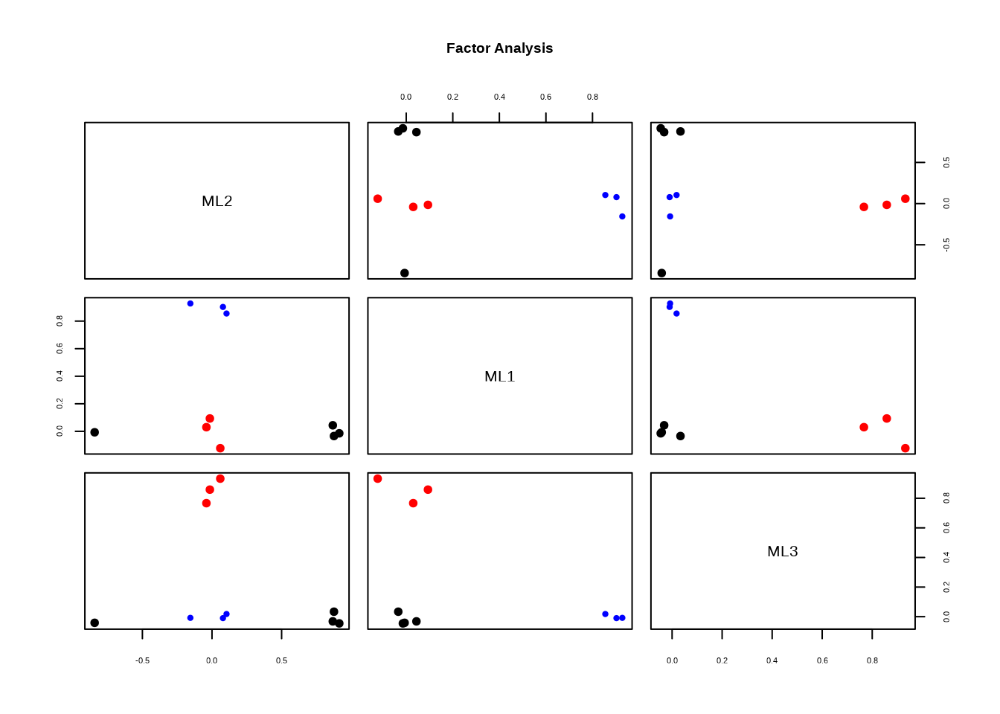
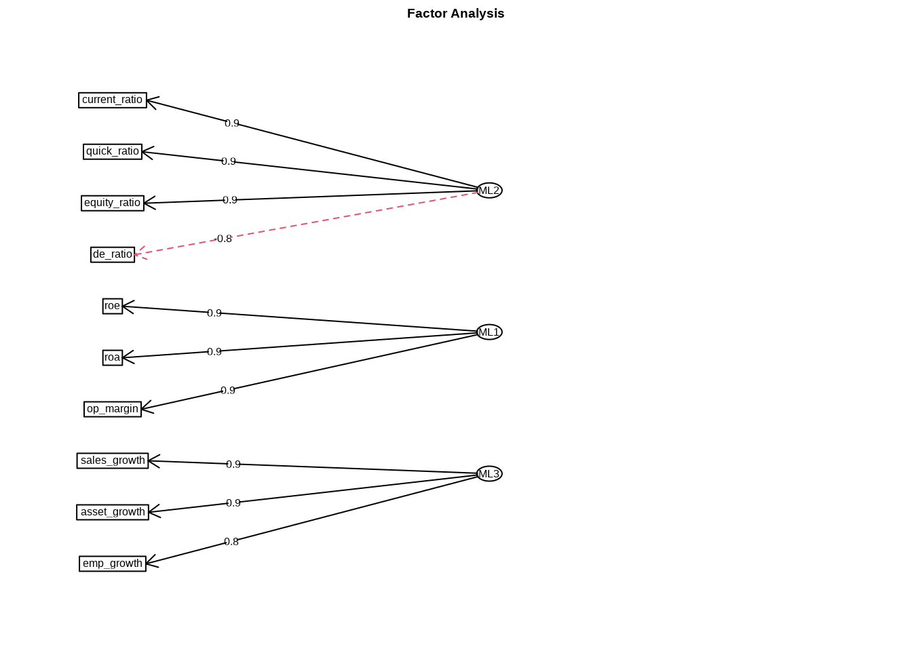

Chapter 13 探索的因子分析
本章の内容は, 授業の R 演習スクリプト R_fa_dist.R に対応する.
因子分析は, 観測された変数どうしの相関関係を, 少数の観測されない共通因子によって説明しようとする手法である. 各変数は「共通因子による部分」と「その変数に固有の部分 (独自因子)」の和として表される. 主成分分析 (PCA) が「変数の分散をできるだけ多く説明する合成変数」を求めるのに対し, 因子分析は「変数間の相関を説明する潜在的な要因」を求める.
- 因子負荷量: 各変数が各因子とどの程度関連しているか
- 共通性: 各変数の分散のうち, 共通因子で説明される割合 (= 1 − 独自性)
- 因子得点: 各個体の, 各因子の値
- 因子軸の回転: 因子負荷量行列は一意に定まらないため, 解釈しやすい形 (単純構造) になるように軸を回転する. 直交回転 (varimax など) と, 因子間の相関を許す斜交回転 (promax など) がある
R では, 標準パッケージの関数factanal() (最尤法) と, パッケージpsychの関数fa() (最尤法以外の推定法も選べる) で実行できる.
13.1 基本操作
データ: 企業の評価スコア (仮想データ)
firm_eval26.csv: n = 26社 (A社〜Z社), p = 5 (仮想データ)
- 証券アナリストが5項目 (財務安全性, 資金繰り, 収益性, 成長性, 競争力) を100点満点で評価
- A社〜I社は, 主成分分析の章の firm_eval9.csv と同じスライド「因子分析」の実行例と同じデータである.
eval26 <- read.csv("class/firm_eval26.csv", header = TRUE, row.names = 1)
head(eval26, 10)
#> 財務安全性 資金繰り 収益性 成長性 競争力
#> A社 79 82 74 67 79
#> B社 77 80 84 83 85
#> C社 72 81 69 70 72
#> D社 72 77 79 77 82
#> E社 84 79 72 61 70
#> F社 74 73 84 74 84
#> G社 85 84 75 71 76
#> H社 72 76 71 70 69
#> I社 72 72 79 80 80
#> J社 75 85 89 92 94
round(cor(eval26), 2)
#> 財務安全性 資金繰り 収益性 成長性 競争力
#> 財務安全性 1.00 0.77 0.40 0.32 0.37
#> 資金繰り 0.77 1.00 0.40 0.40 0.42
#> 収益性 0.40 0.40 1.00 0.78 0.80
#> 成長性 0.32 0.40 0.78 1.00 0.74
#> 競争力 0.37 0.42 0.80 0.74 1.00財務安全性と資金繰り, 収益性・成長性・競争力の間で, それぞれ相関が強い.
因子分析の実行
因子数 \(k = 2\) の因子分析を行う (最尤法. 回転のデフォルトは varimax).
eval26_fac <- factanal(eval26, factors = 2)
eval26_fac
#>
#> Call:
#> factanal(x = eval26, factors = 2)
#>
#> Uniquenesses:
#> 財務安全性 資金繰り 収益性 成長性 競争力
#> 0.239 0.227 0.158 0.275 0.238
#>
#> Loadings:
#> Factor1 Factor2
#> 財務安全性 0.227 0.842
#> 資金繰り 0.269 0.837
#> 収益性 0.894 0.208
#> 成長性 0.832 0.182
#> 競争力 0.844 0.222
#>
#> Factor1 Factor2
#> SS loadings 2.328 1.535
#> Proportion Var 0.466 0.307
#> Cumulative Var 0.466 0.773
#>
#> Test of the hypothesis that 2 factors are sufficient.
#> The chi square statistic is 0.71 on 1 degree of freedom.
#> The p-value is 0.4出力の見方:
Uniquenesses: 独自性 (共通因子で説明できない分散の割合)Loadings: 因子負荷量 (絶対値 0.1 未満は空欄で表示される)SS loadings,Proportion Var,Cumulative Var: 因子ごと, およびモデル全体の説明力- 適合度の検定 (帰無仮説: 因子数 \(k\) で十分): p 値が大きければ, 因子数 \(k\) で十分と判断する
2つの因子で, 全体の変動の77%を説明している. 第1因子は収益性・成長性・競争力 (「収益・成長性」), 第2因子は財務安全性・資金繰り (「安全性」) と解釈できる.
# 因子負荷量の棒グラフ
par(mfrow = c(1, 2))
barplot(eval26_fac$loadings[, 1], col = "orange", las = 2, main = "Factor1")
barplot(eval26_fac$loadings[, 2], col = "lightblue", las = 2, main = "Factor2")
因子軸の回転と因子得点
promax 回転 (斜交回転の一種) を指定し, 因子得点 (回帰法) も求める.
eval26_fac3 <- factanal(eval26, factors = 2, rotation = "promax", scores = "regression")
eval26_fac3$loadings # 単純構造に近づく → 解釈しやすい
#>
#> Loadings:
#> Factor1 Factor2
#> 財務安全性 0.881
#> 資金繰り 0.864
#> 収益性 0.919
#> 成長性 0.859
#> 競争力 0.860
#>
#> Factor1 Factor2
#> SS loadings 2.322 1.523
#> Proportion Var 0.464 0.305
#> Cumulative Var 0.464 0.769
head(eval26_fac3$scores, 10) # 因子得点
#> Factor1 Factor2
#> A社 -0.9476938 1.01455115
#> B社 0.9170987 -0.10228099
#> C社 -1.2672508 0.52728577
#> D社 0.4823151 -0.52440454
#> E社 -1.8508249 1.54753659
#> F社 0.9910872 -0.89182260
#> G社 -1.2192935 1.73415075
#> H社 -1.0299382 0.03731654
#> I社 0.6918945 -1.00220908
#> J社 1.9670921 -0.32035309varimax 回転では各変数がもう一方の因子にも 0.2 前後の負荷量を持っていたが, promax 回転では, もう一方の因子への負荷量が 0.1 未満 (空欄) になり, 解釈しやすくなった.
# 共通性と独自性
eval26_fac3$uniquenesses # 独自性
#> 財務安全性 資金繰り 収益性 成長性 競争力
#> 0.2393732 0.2266867 0.1575924 0.2754804 0.2375398
1 - eval26_fac3$uniquenesses # 共通性
#> 財務安全性 資金繰り 収益性 成長性 競争力
#> 0.7606268 0.7733133 0.8424076 0.7245196 0.7624602例えば, 財務安全性の独自性は0.24なので, 財務安全性の分散の約76%は共通因子で説明できる.
# 変数と因子得点のバイプロット
biplot(eval26_fac3$scores, eval26_fac3$loadings, cex = c(0.7, 0.9))
abline(h = 0, v = 0, lty = 3)
パッケージpsychの関数fa()
関数fa()は因子分析の多機能な関数で, 最尤法以外の推定法 (主因子法など) も選べ, 適合度や信頼性などの指標も計算する.
fa() の主な引数:
- fm (推定方法): "ml" (最尤法), "pa" (主因子法), "gls" (一般化最小2乗法),
"wls" (重み付き最小2乗法), "minres" (最小残差法)
- rotate (回転方法):
- 直交回転: "none", "quartimax", "varimax"
- 斜交回転: "simplimax", "oblimin", "promax"
※ デフォルト: rotate = "oblimin", fm = "minres"eval26_fa <- fa(r = eval26, nfactors = 2, rotate = "none", fm = "pa", scores = TRUE)
eval26_fa # 標準化された負荷量 (パターン行列) などを表示
#> Factor Analysis using method = pa
#> Call: fa(r = eval26, nfactors = 2, rotate = "none", scores = TRUE,
#> fm = "pa")
#> Standardized loadings (pattern matrix) based upon correlation matrix
#> PA1 PA2 h2 u2 com
#> 財務安全性 0.65 0.58 0.76 0.24 2.0
#> 資金繰り 0.69 0.55 0.78 0.22 1.9
#> 収益性 0.86 -0.32 0.84 0.16 1.3
#> 成長性 0.79 -0.31 0.73 0.27 1.3
#> 競争力 0.83 -0.28 0.76 0.24 1.2
#>
#> PA1 PA2
#> SS loadings 2.95 0.91
#> Proportion Var 0.59 0.18
#> Cumulative Var 0.59 0.77
#> Proportion Explained 0.76 0.24
#> Cumulative Proportion 0.76 1.00
#>
#> Mean item complexity = 1.5
#> Test of the hypothesis that 2 factors are sufficient.
#>
#> df null model = 10 with the objective function = 3.22 with Chi Square = 72.34
#> df of the model are 1 and the objective function was 0.03
#>
#> The root mean square of the residuals (RMSR) is 0.01
#> The df corrected root mean square of the residuals is 0.04
#>
#> The harmonic n.obs is 26 with the empirical chi square 0.08 with prob < 0.78
#> The total n.obs was 26 with Likelihood Chi Square = 0.71 with prob < 0.4
#>
#> Tucker Lewis Index of factoring reliability = 1.049
#> RMSEA index = 0 and the 90 % confidence intervals are 0 0.497
#> BIC = -2.54
#> Fit based upon off diagonal values = 1
#> Measures of factor score adequacy
#> PA1 PA2
#> Correlation of (regression) scores with factors 0.97 0.89
#> Multiple R square of scores with factors 0.93 0.80
#> Minimum correlation of possible factor scores 0.86 0.60
eval26_fa$communality # 共通性
#> 財務安全性 資金繰り 収益性 成長性 競争力
#> 0.7583155 0.7758613 0.8411042 0.7253489 0.7621076回転しない場合, 第1因子 (PA1) は全ての変数に大きな正の負荷量を持つ「総合的な評価」, 第2因子 (PA2) は安全性の2項目と収益・成長性の3項目で符号が逆になる「安全性 vs 収益・成長性」の対比となる.
回転しない因子は, 主成分分析の主成分と似た解釈になることが多い.
(参考) 斜交回転 (oblimin) と比べてみる. 関数fa()の結果は, そのままbiplot()に与えることができる (斜交回転にはパッケージGPArotationが必要).
eval26_fa2 <- fa(r = eval26, nfactors = 2, rotate = "oblimin", fm = "pa", scores = TRUE)
print(eval26_fa2$loadings, cutoff = 0.3)
#>
#> Loadings:
#> PA1 PA2
#> 財務安全性 0.884
#> 資金繰り 0.865
#> 収益性 0.919
#> 成長性 0.861
#> 競争力 0.861
#>
#> PA1 PA2
#> SS loadings 2.328 1.531
#> Proportion Var 0.466 0.306
#> Cumulative Var 0.466 0.772
par(mfrow = c(1, 2))
biplot(eval26_fa, main = "回転なし")
biplot(eval26_fa2, main = "oblimin 回転")
(参考) 関数fa.diagram()は, 各変数がどの因子と強く関連するか (と因子間の相関) を図示する.

13.2 実践的な手順
データ: 上場企業の財務比率 (仮想データ)
主成分分析の章と同じデータである.
firm_ratios.csv: 200社 (仮想データ)
- 安全性: current_ratio (流動比率), quick_ratio (当座比率), equity_ratio (自己資本比率), de_ratio (D/Eレシオ)
- 収益性: roa, roe, op_margin (営業利益率)
- 成長性: sales_growth (売上高成長率), asset_growth (総資産成長率), emp_growth (従業員数増加率)前提条件のチェック
KMO(ratios) # KMO ≥ 0.6 程度なら因子分析に適する
#> Kaiser-Meyer-Olkin factor adequacy
#> Call: KMO(r = ratios)
#> Overall MSA = 0.82
#> MSA for each item =
#> current_ratio quick_ratio equity_ratio de_ratio roa
#> 0.85 0.86 0.88 0.90 0.79
#> roe op_margin sales_growth asset_growth emp_growth
#> 0.76 0.82 0.72 0.74 0.83
cortest.bartlett(cor(ratios), n = nrow(ratios)) # 有意 → 変数間に相関があり, 因子分析の意味がある
#> $chisq
#> [1] 1506.885
#>
#> $p.value
#> [1] 1.888474e-286
#>
#> $df
#> [1] 45KMO (Kaiser-Meyer-Olkin) 指標は, 変数間の相関のうち, 他の変数では説明できない部分 (偏相関) が小さいほど 1 に近づく. Bartlett の球面性検定は, 「相関行列が単位行列である (変数間に相関がない)」という帰無仮説の検定である.
因子数の決定

#> Parallel analysis suggests that the number of factors = 3 and the number of components = NA
eigen(cor(ratios))$values # 相関行列の固有値 (1 以上の個数: Kaiser-Guttman ルール)
#> [1] 4.2061013 2.3458756 1.8571060 0.3652784 0.2633239 0.2305445 0.2139928
#> [8] 0.2014352 0.1641039 0.1522385VSS (Very Simple Structure) 規準, Velicer の MAP 規準, BIC なども因子数の目安になる.

print(res_vss)
#>
#> Very Simple Structure
#> Call: vss(x = ratios, n = 6, fm = "ml")
#> VSS complexity 1 achieves a maximimum of 0.86 with 5 factors
#> VSS complexity 2 achieves a maximimum of 0.96 with 3 factors
#>
#> The Velicer MAP achieves a minimum of 0.05 with 3 factors
#> BIC achieves a minimum of -80.4 with 3 factors
#> Sample Size adjusted BIC achieves a minimum of -23.37 with 3 factors
#>
#> Statistics by number of factors
#> vss1 vss2 map dof chisq prob sqresid fit RMSEA BIC SABIC complex
#> 1 0.56 0.00 0.197 35 816.802 6.3e-149 11.91 0.56 0.33 631 742.2 1.0
#> 2 0.72 0.81 0.145 26 339.199 2.8e-56 5.16 0.81 0.25 201 283.8 1.2
#> 3 0.86 0.96 0.053 18 14.970 6.6e-01 0.57 0.98 0.00 -80 -23.4 1.1
#> 4 0.86 0.94 0.087 11 4.788 9.4e-01 0.44 0.98 0.00 -53 -18.6 1.1
#> 5 0.86 0.93 0.127 5 0.761 9.8e-01 0.39 0.99 0.00 -26 -9.9 1.2
#> 6 0.79 0.92 0.178 0 0.021 NA 0.28 0.99 NA NA NA 1.2
#> eChisq SRMR eCRMS eBIC
#> 1 1.3e+03 0.26881 0.3048 1115
#> 2 4.8e+02 0.16414 0.2159 347
#> 3 1.8e+00 0.00996 0.0158 -94
#> 4 4.1e-01 0.00480 0.0097 -58
#> 5 8.7e-02 0.00220 0.0066 -26
#> 6 2.0e-03 0.00033 NA NA平行分析, 固有値, VSS (complexity 2), MAP, BIC のいずれも, 因子数 3 を示している. なお, 変数が5つの企業の評価スコアのデータでは, 因子数3以上で自由度が負になるため, このような比較はできない.
因子分析の実行
# 因子数 k = 3, varimax 回転 (直交回転)
fa_vari <- factanal(ratios, factors = 3)
print(fa_vari$loadings, cutoff = 0.3) # 絶対値 0.3 未満は表示しない
#>
#> Loadings:
#> Factor1 Factor2 Factor3
#> current_ratio 0.896
#> quick_ratio 0.865
#> equity_ratio 0.859
#> de_ratio -0.838
#> roa 0.894
#> roe 0.892
#> op_margin 0.854
#> sales_growth 0.906
#> asset_growth 0.856
#> emp_growth 0.754
#>
#> Factor1 Factor2 Factor3
#> SS loadings 3.108 2.430 2.210
#> Proportion Var 0.311 0.243 0.221
#> Cumulative Var 0.311 0.554 0.775
# 因子数 k = 3, promax 回転 (斜交回転)
fa_pro <- factanal(ratios, factors = 3, rotation = "promax", scores = "regression")
print(fa_pro$loadings, cutoff = 0.3)
#>
#> Loadings:
#> Factor1 Factor2 Factor3
#> current_ratio 0.913
#> quick_ratio 0.874
#> equity_ratio 0.866
#> de_ratio -0.841
#> roa 0.906
#> roe 0.931
#> op_margin 0.858
#> sales_growth 0.934
#> asset_growth 0.857
#> emp_growth 0.766
#>
#> Factor1 Factor2 Factor3
#> SS loadings 3.10 2.451 2.202
#> Proportion Var 0.31 0.245 0.220
#> Cumulative Var 0.31 0.555 0.775自主課題 3つの因子は, それぞれどのような意味に解釈できるか? 名前を付けてみよう.
斜交回転では因子間に相関がある. 因子間相関行列は, 回転行列から計算できる.
rotmat <- fa_pro$rotmat
round(solve(t(rotmat) %*% rotmat), 2)
#> [,1] [,2] [,3]
#> [1,] 1.00 0.25 0.30
#> [2,] 0.25 1.00 0.23
#> [3,] 0.30 0.23 1.00安全性・収益性・成長性の因子は, 互いに弱い正の相関を持つ.
因子数を変えると, 因子の内容が大きく変わることがある (主成分分析では, 主成分の数を変えても, 上位の主成分は変わらない).
print(factanal(ratios, factors = 2, rotation = "promax")$loadings, cutoff = 0.3)
#>
#> Loadings:
#> Factor1 Factor2
#> current_ratio 0.912
#> quick_ratio 0.893
#> equity_ratio 0.867
#> de_ratio -0.858
#> roa 0.908
#> roe 0.945
#> op_margin 0.867
#> sales_growth
#> asset_growth 0.323
#> emp_growth
#>
#> Factor1 Factor2
#> SS loadings 3.233 2.655
#> Proportion Var 0.323 0.265
#> Cumulative Var 0.323 0.589因子得点の活用
第1因子と第2因子の得点で企業を位置づける. 因子の番号 (Factor1, 2, 3) と意味の対応は, 上の負荷量で確認すること.
firm_fs <- firm %>%
bind_cols(as_tibble(fa_pro$scores))
ggplot(firm_fs, aes(Factor1, Factor2, color = industry)) + geom_point() + geom_hline(yintercept = 0,
linetype = 3) + geom_vline(xintercept = 0, linetype = 3)
firm_fs %>%
arrange(desc(Factor1 + Factor2)) %>%
dplyr::select(firm_id, industry, Factor1, Factor2, Factor3) %>%
head()
#> firm_id industry Factor1 Factor2 Factor3
#> 1 F058 nonmanuf 1.8173310 1.5830628 -1.31852992
#> 2 F018 nonmanuf 1.1859200 2.0845738 -0.07172699
#> 3 F062 nonmanuf 2.2555395 0.9052498 -1.13903149
#> 4 F152 nonmanuf 2.2985778 0.6003912 -2.63056198
#> 5 F174 nonmanuf 0.9533495 1.7513032 -0.71054034
#> 6 F176 manuf 0.3283850 2.0907192 -0.38777218主成分分析との比較
pc_cor <- prcomp(ratios, scale. = TRUE)
round(pc_cor$rotation[, 1:3], 2)
#> PC1 PC2 PC3
#> current_ratio 0.36 0.37 0.02
#> quick_ratio 0.36 0.34 -0.04
#> equity_ratio 0.36 0.33 0.04
#> de_ratio -0.37 -0.31 0.02
#> roa 0.32 -0.28 0.38
#> roe 0.24 -0.38 0.40
#> op_margin 0.33 -0.27 0.36
#> sales_growth 0.26 -0.23 -0.49
#> asset_growth 0.28 -0.32 -0.38
#> emp_growth 0.24 -0.30 -0.41主成分分析の第2, 第3主成分は複数の系統の指標が混ざっていて解釈しにくかったが, 因子分析 (回転あり) では「安全性」「収益性」「成長性」がはっきり分かれる. 主成分分析は「分散の説明」, 因子分析は「相関の説明」を目的とし, 因子分析では回転によって解釈しやすくできる.
13.3 (参考) 相関構造の可視化
パッケージqgraphの関数qgraph()で, 変数間の相関を「相関ネットワーク」として可視化できる.
相関係数の絶対値が 0.2 以上の組を線で結び, 線の太さが相関の強さを表す.

安全性・収益性・成長性の3つのまとまりが見える.
パッケージpsychの関数fa.plot()は, 因子負荷量の平面上に変数を配置する (因子数が3以上の場合は, 因子の組合せごとの散布図行列).
fa_pro_psych <- fa(ratios, nfactors = 3, rotate = "promax", fm = "ml")
fa.plot(fa_pro_psych, cut = 0.5)

検証的因子分析 (CFA) や構造方程式モデリング (SEM) は, パッケージlavaanの関数cfa(), sem()で実行できる.